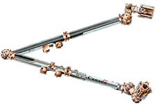
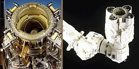
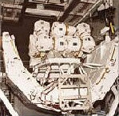
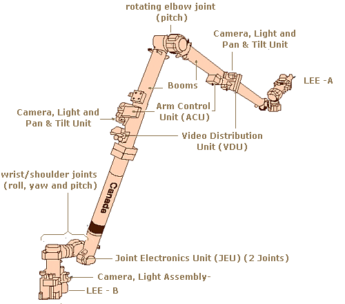
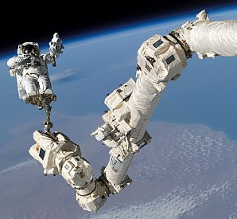
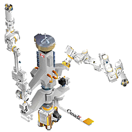

A number of external robotic systems are used to move items and space walkers around the outside of the station for assembly, maintenance and logistics. Most are fixed in place to modules.
Two systems in the U.S. Segment, however, have an advantage of being able to be moved around the station. These are:-
1. Space Station Remote Manipulator System [SSRMS]
2. Special Purpose Dextrous Manipulator [SPDM]
Space Station Remote Manipulator System [SSRMS] (Canadarm2) ▲
Introduction
The Space Station Remote Manipulator System [SSRMS], called "Canadarm2" is a bigger, smarter version of the space shuttle's robotic arm. Both arms were built for NASA by the Canadian Space Agency (CSA), one of the partner nations in the ISS project.

Canadarm2 Drawing
Canadarm2 is designed to remain in space attached to special attachment points on the outside of the ISS. It can also become part of the Mobile Servicing System (MSS) described below.
Canadarm2 is operated remotely by the Station crew from a Robotic Work Stations (RWS) in the U.S. Destiny Laboratory or the Cupola. The RWS has two sets of control joysticks; one Rotational Hand Controller (RHC) and one Translational Hand Controller (THC). In addition to this is the Display and Control Panel (DCP) and the Portable Computer System (PCS) lap top.
Video cameras and sensors inform the operator of the exact position of each of the arms joints. Operations are also monitored by staff on Earth at the Mission Control Center (NASA), or from the Canadian Space Agency (CSA).

Latching End Effectors (LEE)
Canadarm2 can relocate itself on the Station by using its Latching End Effectors (LEE). These can attach to either a base or manipulator allowing the arm to "walk" from one attachment point to another around the Station. The attachment points are called Power and Data Grapple Fixtures (PDGF).
In addition to moving itself around the station, Canadarm2 can move any object with a grapple fixture.
In construction of the station the arm was used to move large segments into place. It can also be used to capture un-piloted ships like the SpaceX Dragon, Orbital ATK Cygnus and the Japanese H-II Transfer Vehicle (HTV). These are equipped with a standard grapple fixture which the Canadarm2 uses to capture and dock the spacecraft. The arm is also used to un-dock and release the spacecraft after use.
Installation

Canadarm2
Folded in Spacelab Pallet
Canadarm2 was transported to the ISS and installed in April 2001 during the U.S. Space Shuttle STS-100 mission [Flight 6A].
It was carried on a Spacelab Pallet in the shuttle's cargo bay. To fit the arm on the pallet both booms were hinged in the middle and folded for transport. During installation the booms were un-folded until straight and bolted permanently into this position.
Canadarm2 was initially located on a Power and Data Grapple Fixture (PGDF) on the side of the U.S. Laboratory module (Destiny). It was later moved to the Mobile Transporter (MT) to become part of the Mobile Servicing System (MSS).
Main Components
Canadarm2 is 17.6 m (58 ft) when fully extended, has a diameter of 35 cm (14 in) and a mass of 1,800 kg (4,000 lb). The arm is capable of handling large pay loads of up to 116,000 kg (256,000 lb) and was able to assist with docking the space shuttle.

Canadarm2 Main Components

Astronaut on Canadarm2 (STS-114)
Canadarm2 has two booms joined by a rotating elbow joint (pitch) and has 3 complex rotary wrist/shoulder joints at each end (roll, yaw and pitch). Each end is connected to a Latching End Effector (LEE). All seven joints are motorized.
It also has Video cameras with pan and tilt and lights located on each boom and at the ends.
Canadarm2 Initial Installation
Step
Action
1
The Spacelab Pallet containing Canadarm2 (folded) lifted from the shuttle bay by the shuttle's robot arm.
2
The Spacelab Pallet is attached to a special mounting point on the side of the Destiny Laboratory.
3
Two crew from the shuttle (on a space walk): 3A. Un-fold and secure both Canadarm2 booms, 3B. Connect power and data from Destiny to Canadarm2. (via the pallet)
4
Canadarm2 operated and tested by station crew (in Destiny) with its base on the pallet.
5
Canadarm2 operated to move its free end to latch on to a Power and Data Grapple Fixture (PGDF) on the side of Destiny.
6
Two crew from the shuttle (second space walk): 6A. Disconnect power and data from the pallet, 6B. Connect power and data from Destiny to PGDF.
7
Canadarm2 end on the PGDF on Destiny now becomes the base.
8
Canadarm2 end on the pallet becomes the free end.
9
Canadarm2 is now the "station arm".
10
The Spacelab Pallet (now empty) is detached from the side of Destiny and moved to position over the shuttle's bay by the Station arm. (Canadarm2)
11
The Spacelab Pallet is "handed over" to the shuttle's robot arm.
12
The Spacelab Pallet is placed into the shuttle's cargo bay using the shuttle's robot arm.
Canadarms 1 and 2 Comparison
Item
Canadarm1 (Space Shuttle)
Canadarm2 (ISS)
Name
Space Shuttle Robotic Manipulator System.
Space Station Remote Manipulator System.
Mission Profile
Returns to Earth after every shuttle mission.
Permanently in space.
Range of Motion
Reach limited to length of arm.
Moves end-over-end to reach many parts of the Station in an inch worm-like movement;
- limited only by number of Power Data Grapple Fixtures (PDGFs) on the Station.
PDGFs located around the Station provide power, data and video to the arm
- using its Latching End Effectors (LEEs).
The arm can also travel the entire length of the space station on the Mobile Base System.
Fixed Joint
Fixed to the shuttle by one end.
No fixed end. Equipped with LEEs at each end to provide power, data and video signals to arm.
Degrees of Freedom
6 degrees of freedom.Similar to a human arm:
(2 joints), elbow (1 joint) and wrists (3 joints).
7 degrees of freedom. Much like a human arm: shoulder (3 joints), elbow (1 joint) and wrists (3 joints).
Canadarm2 can change configuration without moving its hands.
Joint Rotation
Limited elbow rotation (limited to 160 degrees).
Joints (7) rotate 540 degrees (+ / - 270 degrees ), larger range of motion than a human arm.
Senses
No sense of touch.
Force moment sensors provide a sense of touch.
Automatic vision feature for capturing and automatic collision avoidance.
Length
15 meters (49.2 feet)
17.6 meters (57.7 feet)
Weight
410.5 kilograms (905 pounds)
1,800 kilograms (3,968 pounds)
Diameter (exterior of composite boom)
33 centimetres (13 inches)
35 centimetres (13.8 inches)
Mass Handling Capacity
(case handling pay load)
29,484 kilograms (65,001 pounds)
[upgraded to 266,000 kilograms (586,429 pounds)]
116,000 kilograms (255,736 pounds) - design case handling pay load.
Speed of Operations
Unloaded: 60 centimetres / second (1.97 feet / second)
Loaded: 6 centimetres / second (2.36 inches / second)
Unloaded: 37 centimetres / second (1.21 feet / second)
Loaded: Station Assembly - 2 centimetres / second (.79 inches / second)
- EVA Support - 15 centimetres / second (5.9 inches / second)
- Orbiter - 1.2 centimetres / second (.47 inches / second)
Stopping Distance (under max. load)
-
0.6 meters (1.96 feet)
Applied Tip Load Range
-
0-1,000 N
Peak Power (operational)
-
2,000 W
Avg. Power (keep alive)
-
435 W
Composition
16 plies of high modulus carbon fiber epoxy
19 plies of high strength carbon fiber thermoplastic
Repairs
Repaired on Earth
Designed to be repaired in space by replacing ORUs (Orbital Replacement Units). Built-in redundancy.
Control
Autonomous operation or astronaut control.
Autonomous operation or astronaut control.
Cameras
2 (one on the elbow and one on the wrist)
4 colour cameras (one at each side of the elbow, the other two on the Latching End Effectors)
Special Purpose Dextrous Manipulator [SPDM] (Dextre) ▲

SPDM - Dextre
The Special Purpose Dextrous Manipulator [SPDM], called 'Dextre' is a smaller two-armed robot capable of handling delicate assembly tasks to reduce the workload of astronauts on space walks.
It has a dual-arm design providing added flexibility and can remove and replace smaller components where precise handling is required. It is also equipped with lights, video equipment, a tool platform and holders.
The SPDM can perform dextrous tasks by sensing various forces and moments on the pay load. In response, it can automatically compensate its movements to ensure the pay load is manipulated smoothly.
It can either be attached to the end of Canadarm2 or ride independently on the Mobile Base System [MB].
Canadarm2 can then deliver equipment to it for servicing. Dextre is controlled remotely by crew inside the Station.
Canadarm2 [SSRMS] - Dextre Comparison
The following table compares the specifications of Canadarm2 [SSRMS] and Dextre [SPDM].